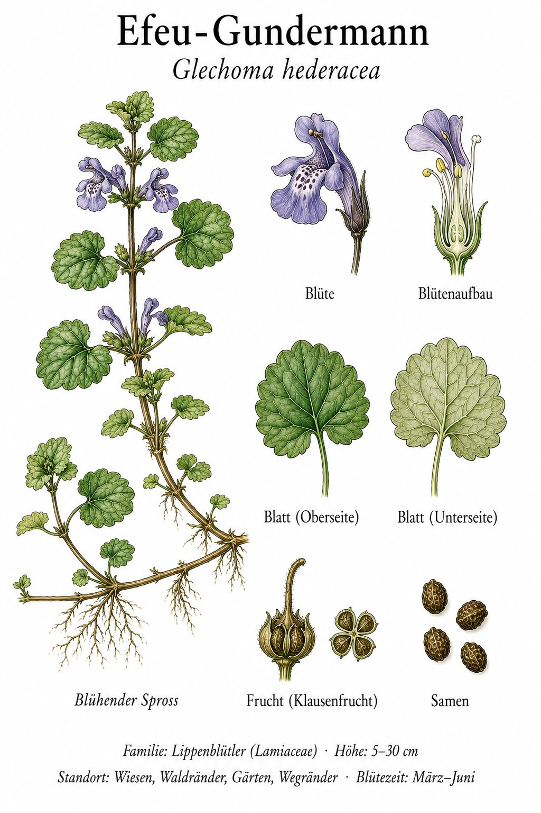

Bier-Kraut vor dem Hopfen
Bevor Hopfen das Standard-Bierwürzkraut wurde (Reinheitsgebot 1516), war Gundermann das Wichtigste: Seine bitteren Stoffe machten das Bier länger haltbar und gaben ihm Geschmack. „Grut-Bier“ hieß diese Tradition. Heute kannst du eine ähnliche Praxis nachvollziehen: junge Blätter im April-Mai gepflückt, schmecken nach einer Mischung aus Pfefferminze und etwas Pfeffer — perfekt für Frühlings-Quark oder grüne Soße.
Bodendecker mit Ranken
Der Gundermann ist eine der ersten richtigen Bodendecker-Pflanzen im Frühling. Er bildet schnellwüchsige, oberflächlich kriechende Triebe, die an jedem Knoten Wurzeln bilden. So bedeckt er innerhalb weniger Jahre ganze Quadratmeter — ohne andere Pflanzen zu verdrängen. Der englische Name „creeping charlie“ beschreibt das treffend.